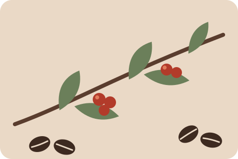
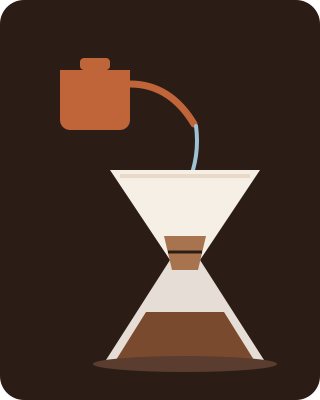

¿Qué es el café de especialidad?
El café es la semilla de la fruta del cafeto, un arbusto que crece en zonas tropicales de altura. Cuando hablamos de café de especialidad nos referimos a granos que se cultivan y procesan con especial cuidado, que se pueden rastrear hasta la finca de origen y que, al ser catados, no presentan defectos y muestran sabores propios: notas frutales, a chocolate, a caramelo o a flores, según la variedad y el lugar donde crecieron.
Nosotros trabajamos con cafés de Colombia, Brasil, Etiopía y Perú. Compramos lotes chicos, los probamos antes de elegirlos y los tostamos en el local para ofrecerlos siempre frescos.

El recorrido, paso a paso
- Cosecha. Los frutos maduros, de color rojo intenso, se recolectan a mano uno por uno.
- Procesado. Se separa la semilla de la pulpa, ya sea por lavado o dejando secar el fruto entero al sol.
- Secado y reposo. El grano verde descansa hasta alcanzar la humedad justa para viajar.
- Tostado. En nuestra tostadora el grano pasa de verde a marrón y desarrolla sus aromas.
- Molienda. Molemos en el momento, con el grosor adecuado para cada método.
- Extracción. El agua caliente disuelve los sabores del café y llega la taza a tu mesa.
Métodos que vas a encontrar en la barra

- Espresso: intenso y con cuerpo, base de cortados, flat white y capuchinos.
- Filtrado (V60 o Chemex): más liviano y limpio, ideal para descubrir las notas de cada origen.
- Prensa francesa: de mayor cuerpo, con los aceites naturales del grano.
- Cold brew: extraído en frío durante 18 horas, suave y refrescante.